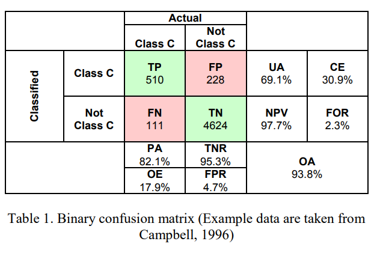

8 Classification and accuracy
8.1 Summary
8.1.1 Landcover classification
*Cannot rely on pre-classified data because the classification method and level of detail may not fully meet the needs of the research, and there may be potential bias.
- Object based image analysis (OBIA)
Source:João Gonçalves 2020
*More accurate than pixel-based analysis, but very dependent on data quality and possible be over-segmentation.
- Sub pixel analysis
Source:Plaza et al. (2002)
*Individual pixels represent smaller areas and the spatial resolution is higher. Also more accurate and detailed. But it requires high data accuracy, time-consuming and sensitivity to noise
8.1.2 Accuracy
- Binary confusion matrix

Source:Barsi et al. 2018 Accuracy Dimensions in Remote Sensing
In remote sensing we focus on:
PA Producer accuracy (recall or true positive rate or sensitivity)
UA User’s accuracy (consumer’s accuracy or precision or positive predictive value
OA the (overall) accuracy
*kappa can express the accuracy of an image compared to the results by chance, but some people say that it has nothing to do with accuracy, and there is no clear conclusion
- F1-Score
We can’t have both a high high producer accuracy and a high user’s accuracy, so the F1-Score (F Measure) combines both PA and UA: Value from 0 to 1, where 1 is better performance
- Receiver Operating Characteristic Curve (the ROC Curve)
Consider True Negatives, consider precision and recall at the same time , solve the problem of data imbalance

Source:Barsi et al. 2018 Accuracy Dimensions in Remote Sensing
True positive rate = TP/TP+FN = good =every plane is a plane ?
False positive rate = FP/FP+TN= good = every cloud is predicted as noise (not a plane) ?
- Remote sensing approach
class definition>pre-processing:train and test split(train 70% test 30% in usual)or cross validation>training>pixel assignment>accuracy assessment
But because Spatial autocorrelation between training and test sets, best approach is spatial cross validation, can use Support Vector Machine classifier that requires hyperparameters (set before the classification)

Source:Lovelace et al. 2022
*pixels perform better than the objects